library(ggplot2)
ggplot(pressure, aes(temperature, pressure)) +
geom_point()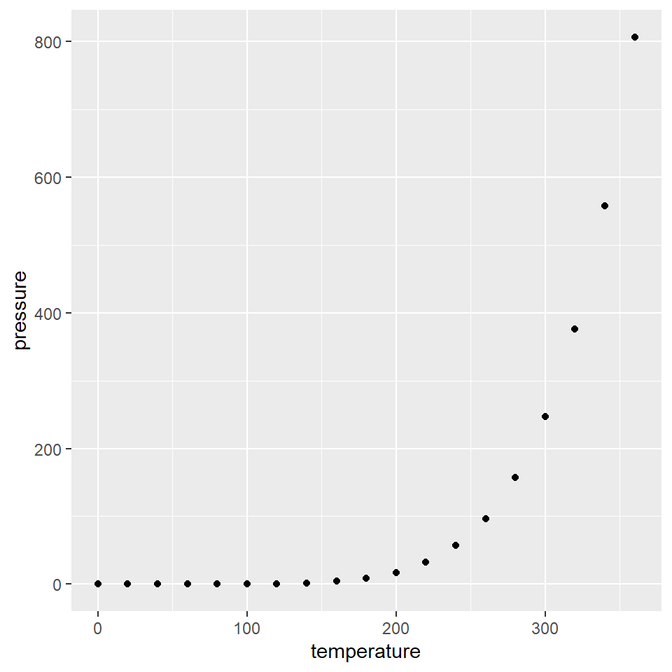
Install R, RStudio and Packages
The R programming language is maintained and distributed by CRAN The Comprehensive R Archive Network. They provide the installers for the binary distributions of the base system and contributed packages. R is FREE!
Installation Instructions are provided for these operating systems:
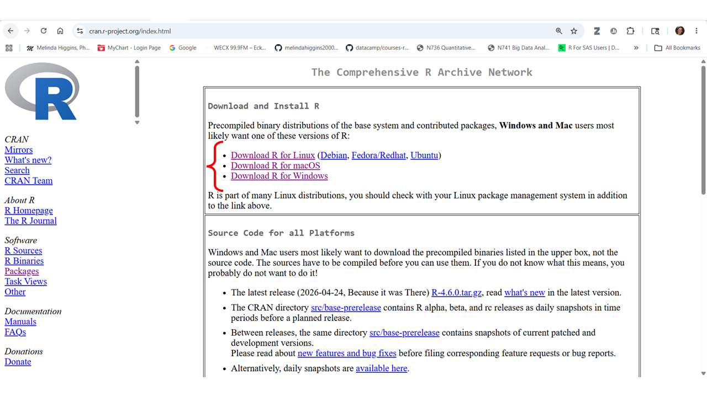
It is important to install the R programming language FIRST. I also encourage you to use the default installation options, so that when you install the RStudio Desktop application, it will “know” where (folder locations) to look for your R installation.
The RStudio IDE (integrated development environment) software is developed and distributed by the POSIT Company, which was formerly known as “RStudio” founded in 2009. In 2022 they changed their name to “Posit”, however, the name of the software application stayed “RStudio”.
For this course, we will be using the RStudio Desktop software. RStudio Desktop is FREE. The “PRO” version does cost money.
You can download RStudio Desktop from https://posit.co/download/rstudio-desktop/.
I think the website link above will “autodetect” which operating system you have. Mine defaults to the Windows installer.
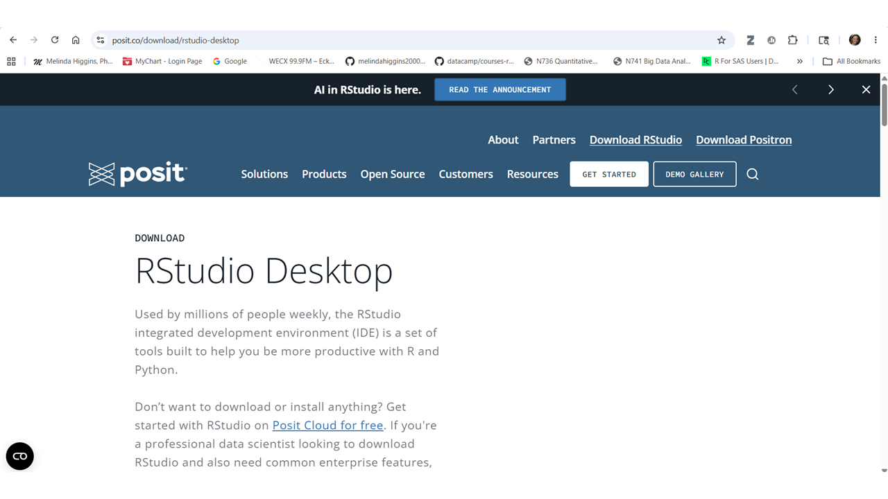
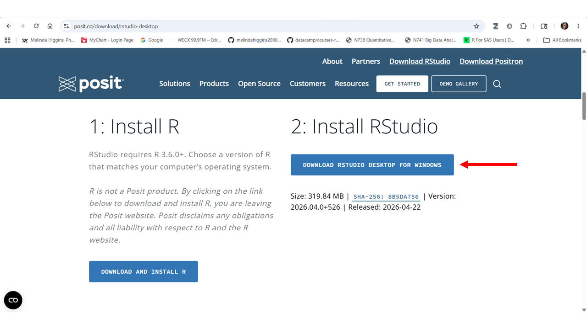
However, if you have a Mac you should get the installer for the Mac OS. Regardless, you can always choose the operating system and version you need.
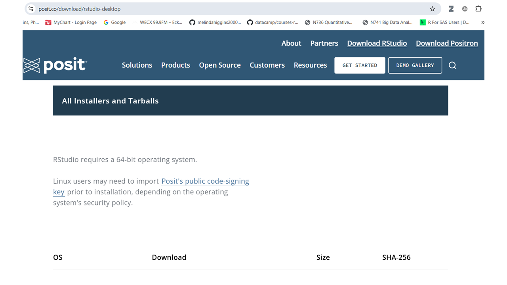
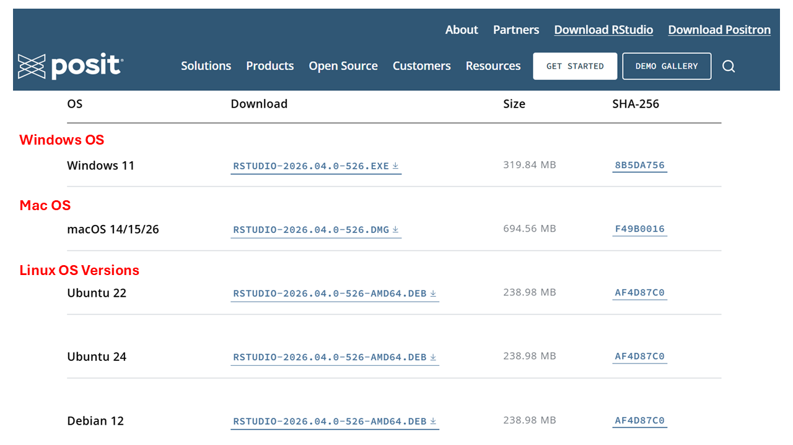
And if you keep scrolling down the webpage you can find older versions of RStudio if/as needed as well.
For this course, I will use the RStudio IDE. However, there is a newer alternative to “RStudio”, known as “Positron” which was released in 2025.
Learn more about Positron. Positron is also an IDE programming environment, but is designed to accommodate multiple programming environments and multiple sessions at the same time, e.g. you can run both R and Python and manage multiple versions at one time. We will NOT cover these details in this course.
Technically, you can also use the RStudio IDE to execute and manage Python programs as well. In fact RStudio can help manage several other programming languages as well.
User Guides
For this course, you will need to have the following packages installed on your computer. All of these packages are available from CRAN.
As of 05/16/2026 at approximately 11:00 am EDT USA time, there are currently 23668 packages hosted on CRAN. More get added everyday!
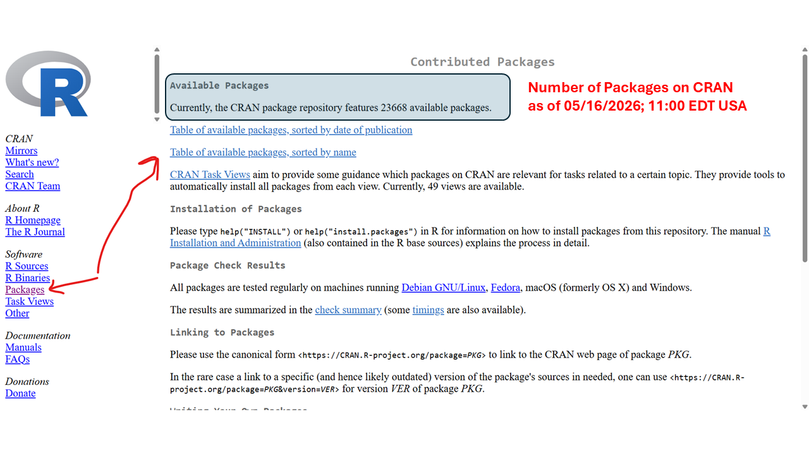
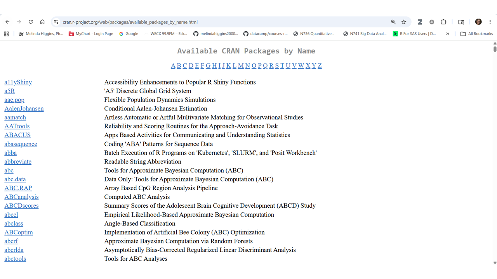
For this course, you will need these 16 packages:
tidyverse which includes a suite of 9 packages (and a few others as well) that are all installed at the same time:
ggtexteasystats which is also a suite of 10 packages:
gmodelsgtsummaryeffectsemmeansbroomrmarkdownknitrtinytex - OPTIONAL - needed to “knit to PDF”
olsrrmodelsummaryjanitordata.tablearsenalTo install these packages, the easiest way is to use the RStudio Menu “Tools/Install” Packages interface:
For example, let’s install a “new” R package, like ggplot2.
Go to the RStudio menu “Tools/Install” Packages
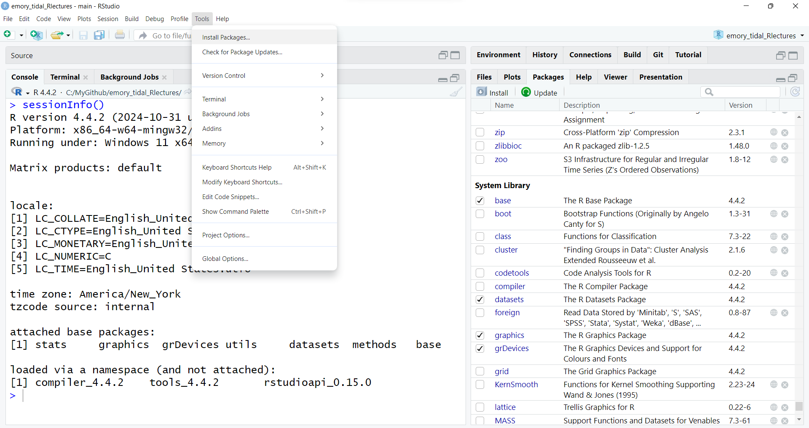
This will then open up a window where you can type in the name of the package you want. As soon as we start typing ggplot2 the menu begins listing all packages with that partial spelling…
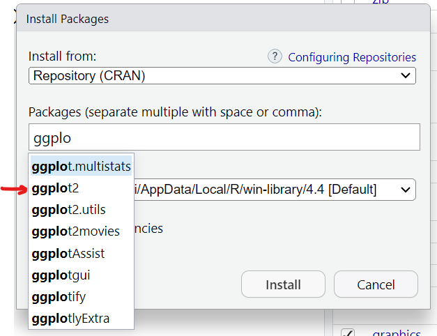
You’ll notice that there are 3 parts to the installation:
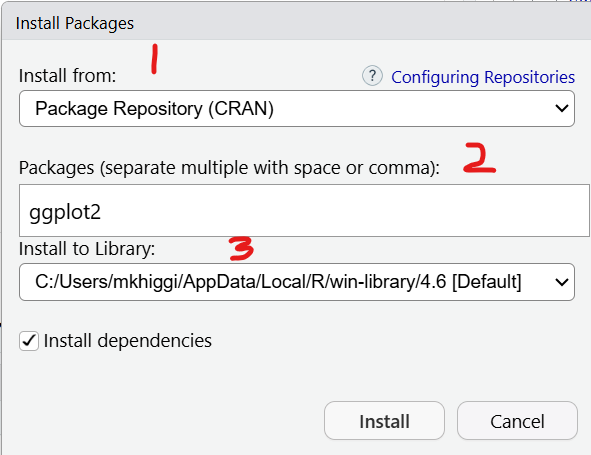
After installing ggplot2 you should see ggplot2 listed under the Packages window:
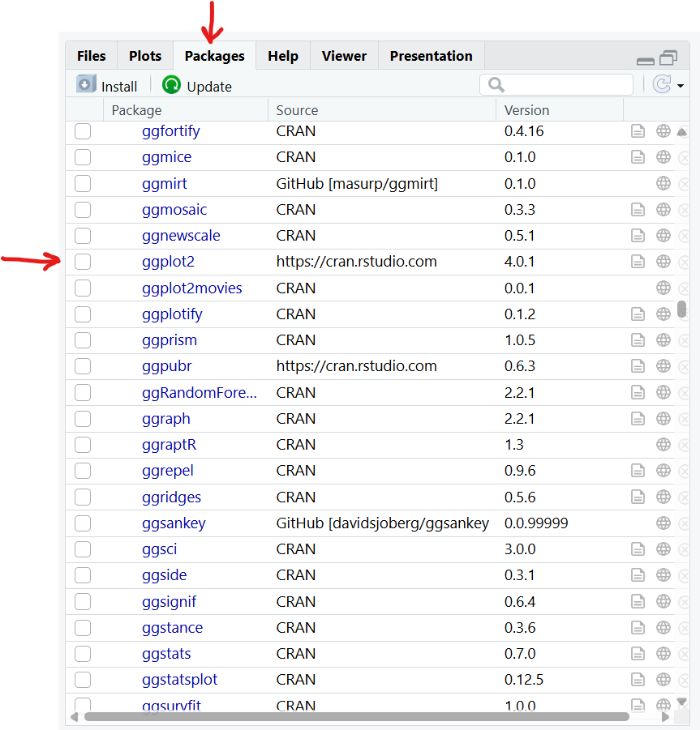
Repeat this process to install the rest of the R packages needed.
Note: You can also confirm the installation of the R packages on your computer by going to the folder listed under #3 “Install to library” path listed above – on my computer my R packages are in this folder on my computer C:\Users\mkhiggi\AppData\Local\R\win-library\4.6.
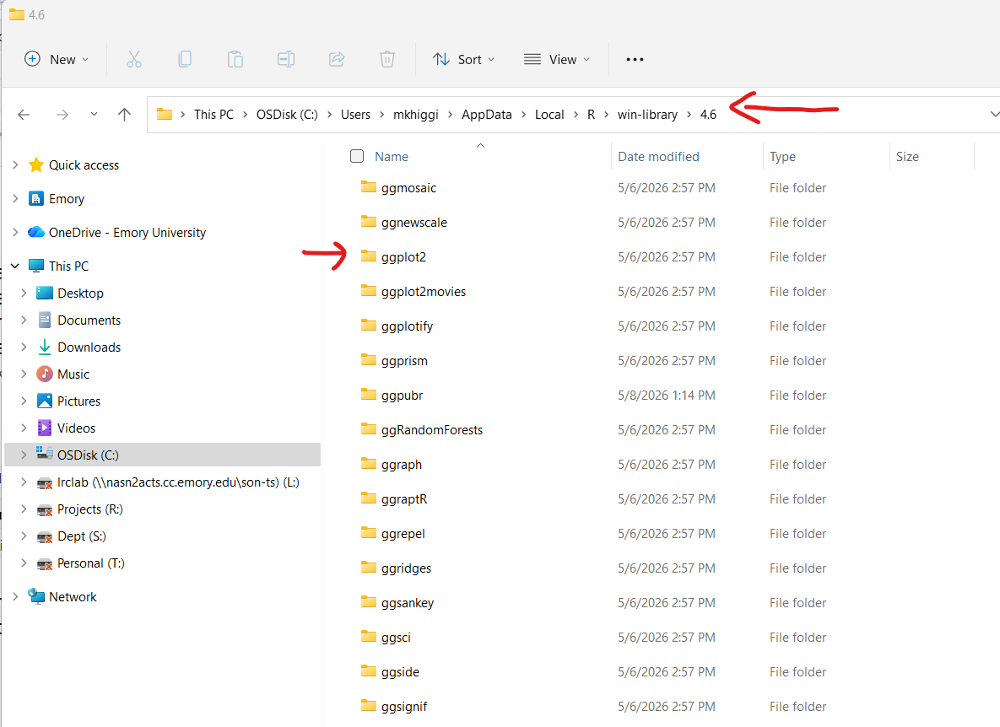
Let’s confirm that your installation of R, RStudio and your packages are working. For example, let’s test that your installation of ggplot2 is working. Run the following R code as a quick test.
library(ggplot2)
ggplot(pressure, aes(temperature, pressure)) +
geom_point()
Now that you have R and RStudio ready to go, let’s download the files you will need for this workshop.
First, go to the Google Drive R4SASUsers_Oct2026 for this workshop.
Next, click the down arrow next to the folder name and select “Download”.
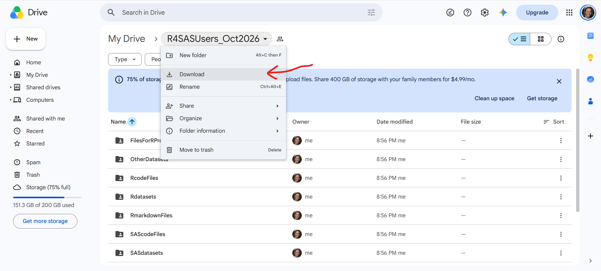
On my computer (Windows 11 operating system) using Google Chrome browser, this downloads a ZIPPED compressed file “R4SASUsers_Oct2026-20261004T010304Z-1-001.zip” - your actual filename may be different. But look for something similar.
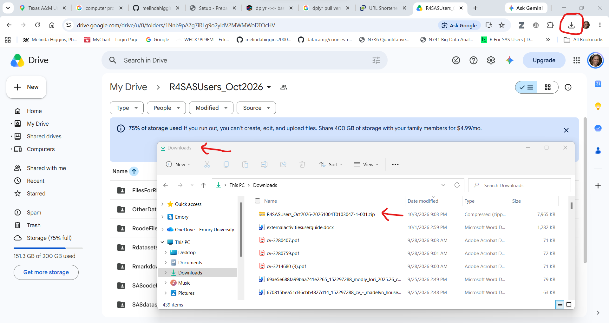
This *.ZIP file actually has all of the files that are on the Google Drive folder all in one compressed file. You have to UNZIP or EXTRACT these files before you can use them. The screenshots below are from a Windows 11 operating system - these may look different on different operating systems (e.g. Linux, Mac), but the process should be similar.
Click on “Extract All”
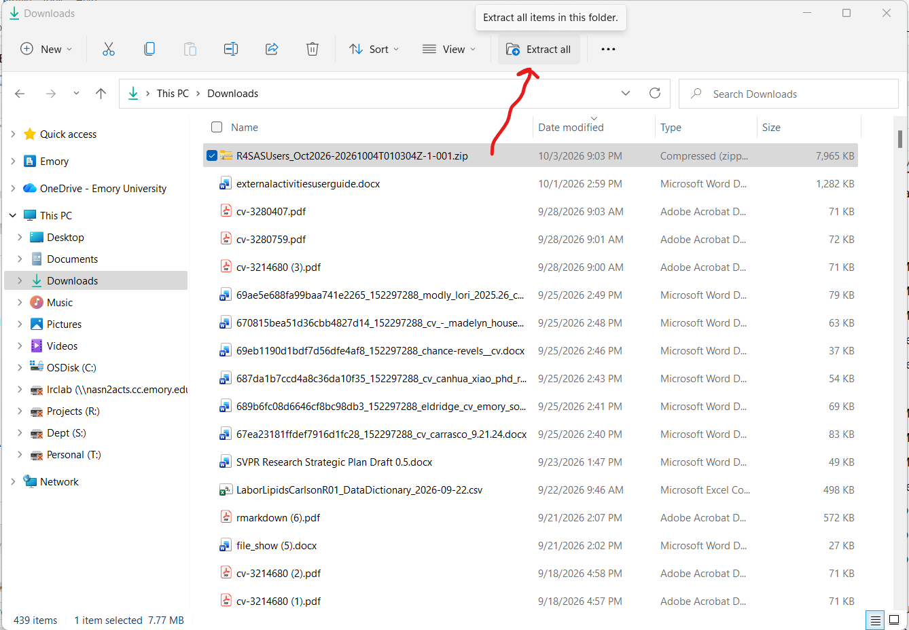
I usually accept the defaults for the folder location, but feel free to change this using “Browse” if you wish. Then click “Extract”.
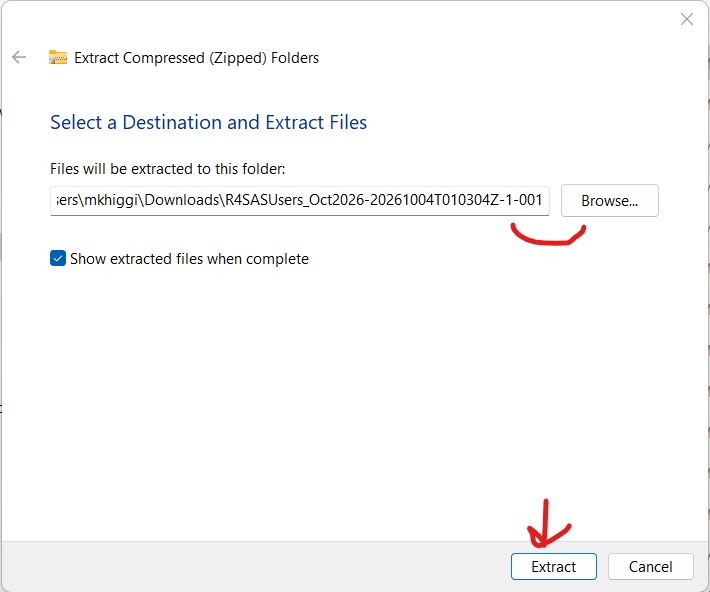
This then extracts all of the original files and places them into this new location on your computer (or cloud or network drive - your choice).
You should now have a new folder on your computer that looks like this:
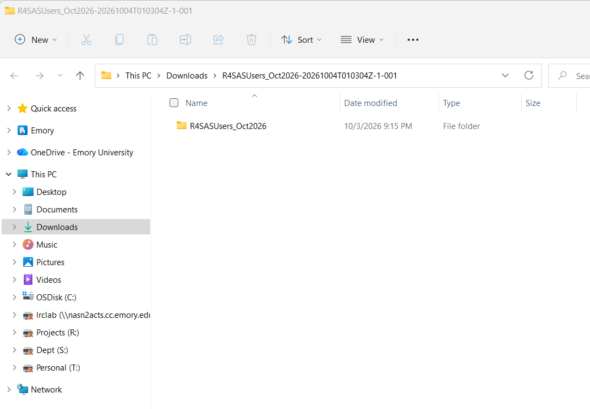
Open this folder. These files and subfolders should now match what was on the Google Drive R4SASUsers_Oct2026.
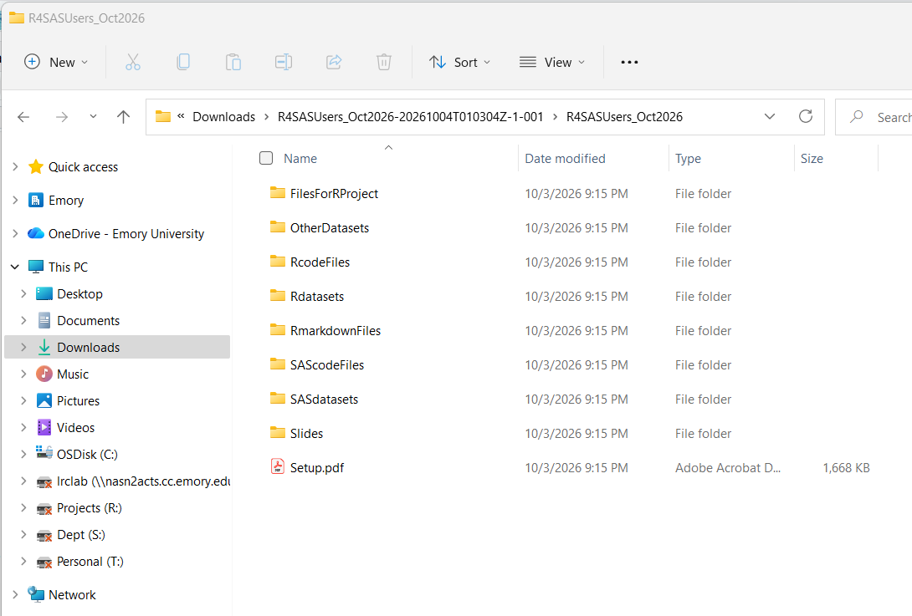
The files contained in this entire folder directory are:
│ Setup.pdf
│
├───FilesForRProject
│ aggstats.R
│ aggstats.sas
│ CESDAnalysisReport.Rmd
│ CESDAnalysisReport_byRace.Rmd
│ CESDAnalysisReport_RaceParameters.Rmd
│ d1_homework.R
│ d1_homework_key.R
│ d2_homework.R
│ d2_homework_key.R
│ dat1.Rdata
│ dat1.sas7bdat
│ dat2.Rdata
│ dat2.sas7bdat
│ finddups.R
│ finddups.sas
│ help.csv
│ help.Rdata
│ help.sas7bdat
│ helpmkh.sav
│ letexample.R
│ letexample.sas
│ macroreg.R
│ macroreg.sas
│ module_d1_01.R
│ module_d1_02.R
│ module_d2_01.R
│ Rscript_01.R
│ sascode_d1_02.sas
│ sascode_d2_01.sas
│ saveplots.R
│ treat1.Rdata
│ treat1.sas7bdat
│ treat2.Rdata
│ treat2.sas7bdat
│
├───OtherDatasets
│ help.csv
│ helpmkh.sav
│
├───RcodeFiles
│ aggstats.R
│ d1_homework.R
│ d1_homework_key.R
│ d2_homework.R
│ d2_homework_key.R
│ finddups.R
│ letexample.R
│ macroreg.R
│ module_d1_01.R
│ module_d1_02.R
│ module_d2_01.R
│ Rscript_01.R
│ saveplots.R
│
├───Rdatasets
│ dat1.Rdata
│ dat2.Rdata
│ help.Rdata
│ treat1.Rdata
│ treat2.Rdata
│
├───RmarkdownFiles
│ CESDAnalysisReport.Rmd
│ CESDAnalysisReport_byRace.Rmd
│ CESDAnalysisReport_RaceParameters.Rmd
│
├───SAScodeFiles
│ aggstats.sas
│ finddups.sas
│ letexample.sas
│ macroreg.sas
│ sascode_d1_02.sas
│ sascode_d2_01.sas
│
├───SASdatasets
│ dat1.sas7bdat
│ dat2.sas7bdat
│ help.sas7bdat
│ treat1.sas7bdat
│ treat2.sas7bdat
│
└───Slides
RforSASUsers_d1_01.pdf
RforSASUsers_d1_01.pptxNext, we are going to move the files in the subfolder “FilesForRProject” into a new project folder on your computer.
Create a new folder on your computer named “R4SASUsers”. Click on New/Folder and name this new folder “R4SASUsers”.
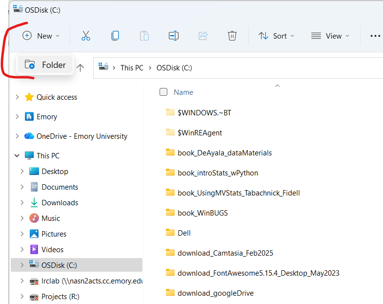
Open another file folder window and go back to where you unzipped the Google Drive files and folders. Then click on the subfolder “FilesForProject” to open it.
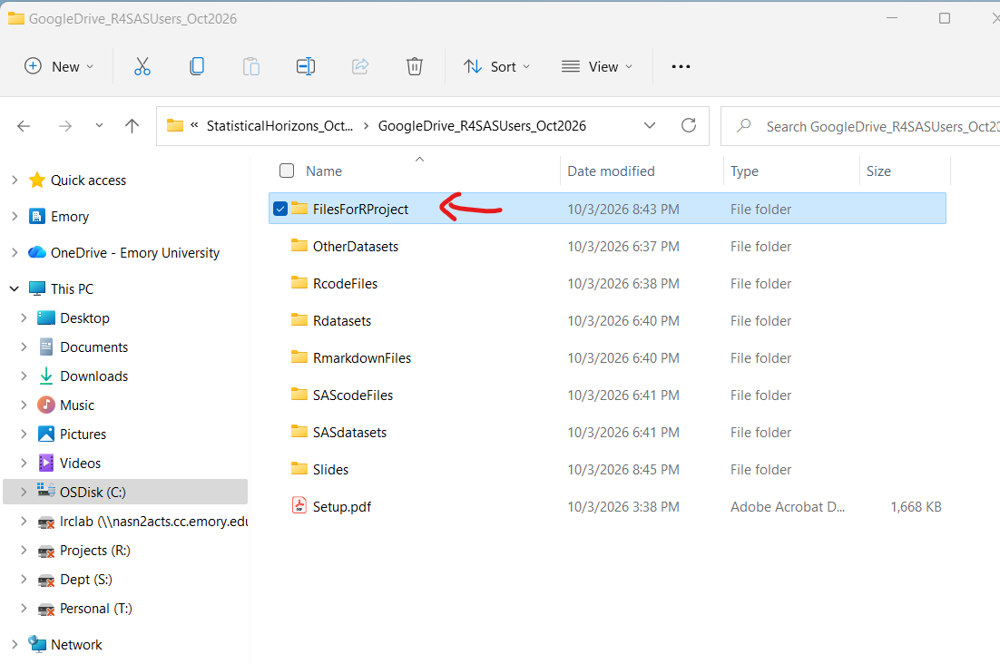
After opening the folder window, click on the 3 dots ... and choose “Select All”
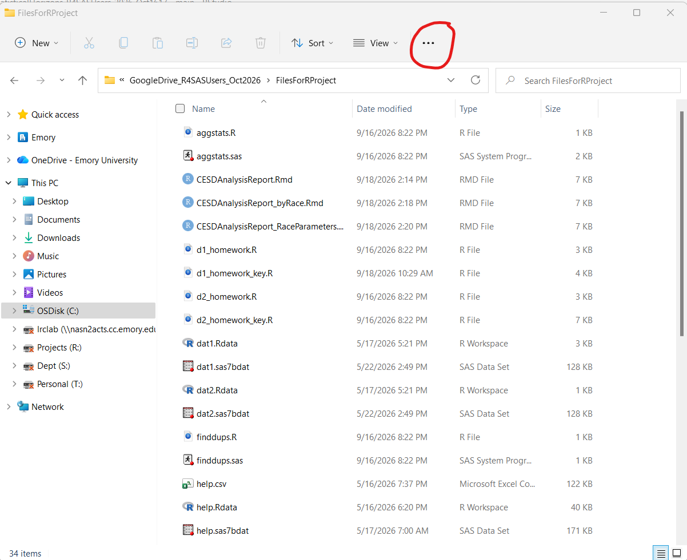
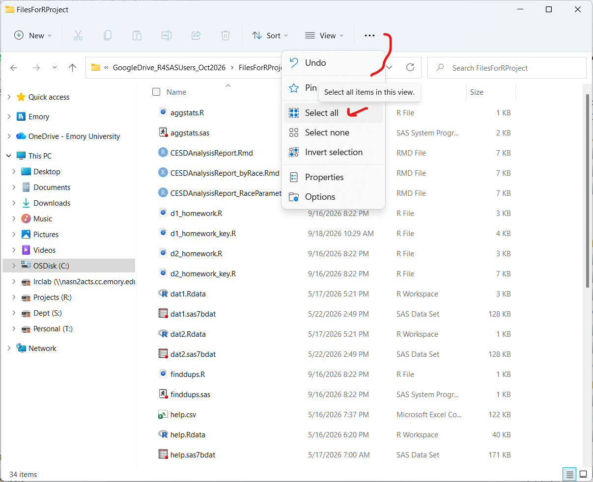
After selecting all of these files, choose COPY.
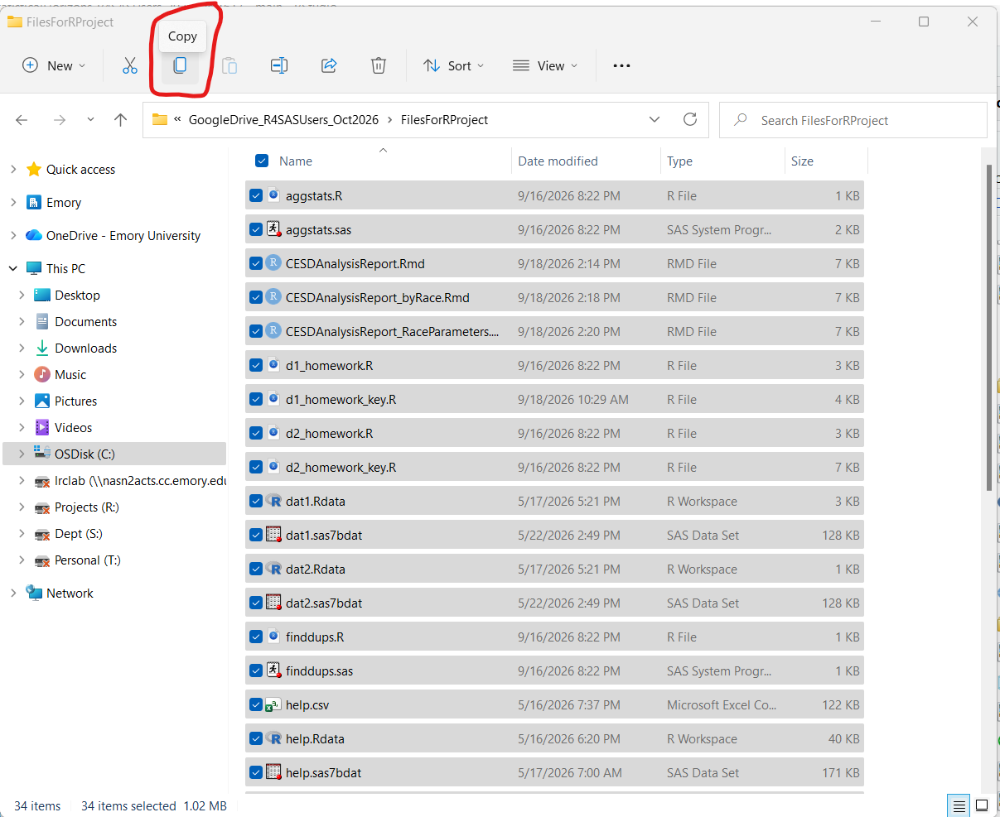
Then open the folder you just created and PASTE all of these files into your new folder.
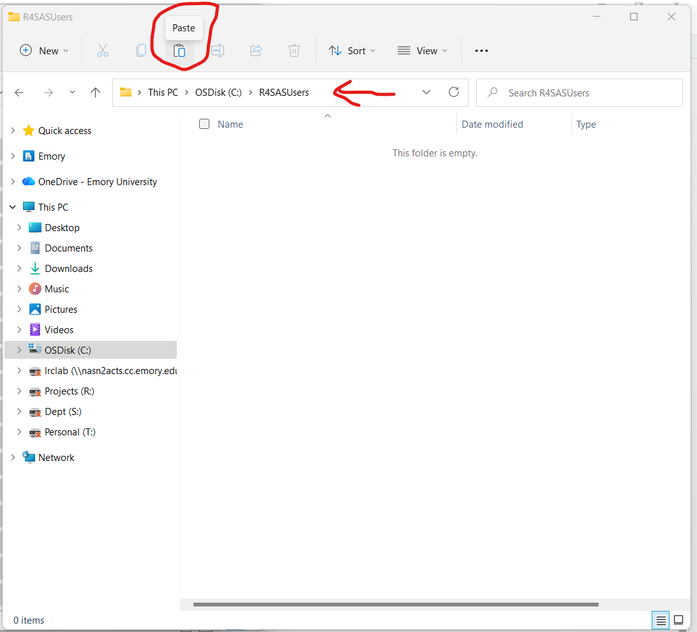
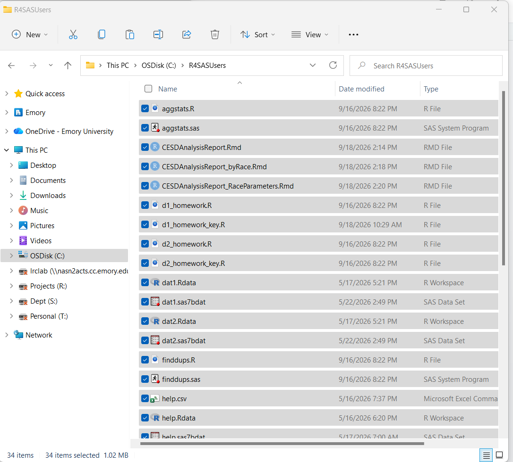
You now have your project folder created for this workshop. On my computer this folder location is C:\R4SASUsers.
Start RStudio and then Click on “File/New Project”.
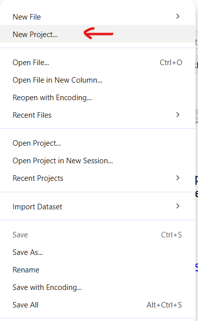
You have 3 options here:
We will use “Existing Directory” since you have already created the project folder on your computer and put your files in there.
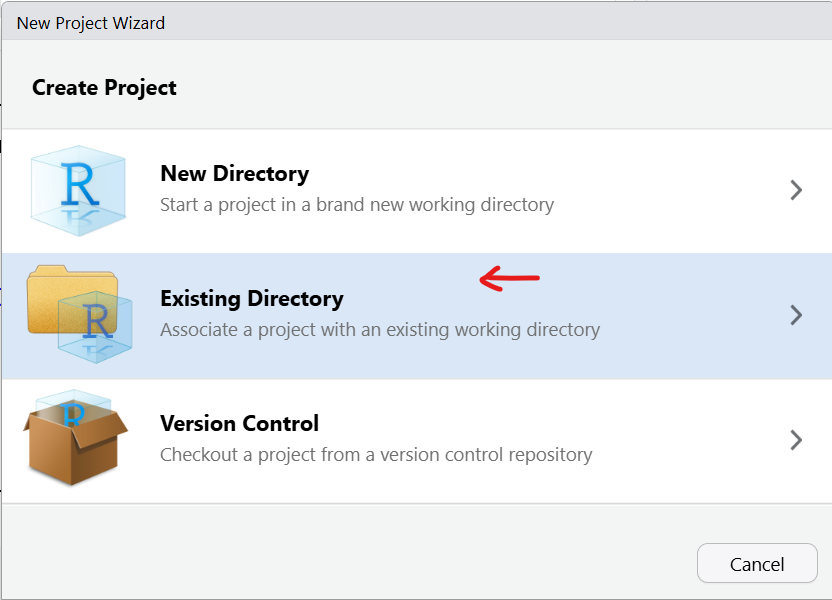
Next you need to select the existing project folder on your computer (or cloud or networked drive) - click “Browse”
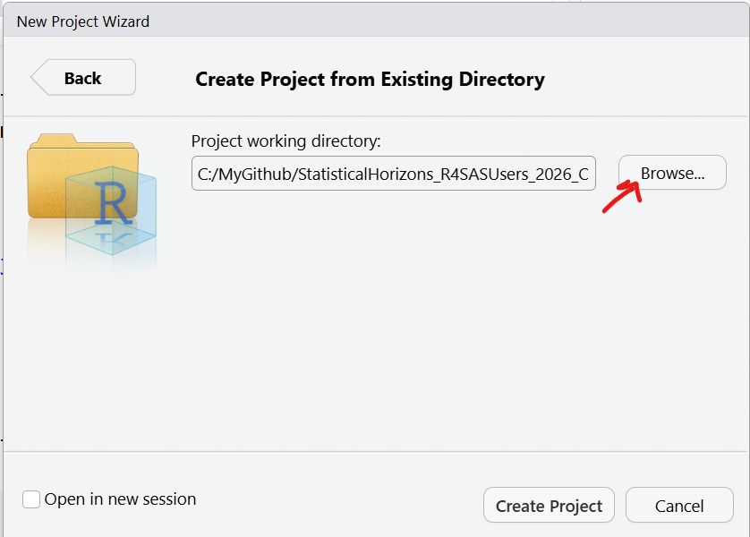
Then go find the folder and click “Open”.
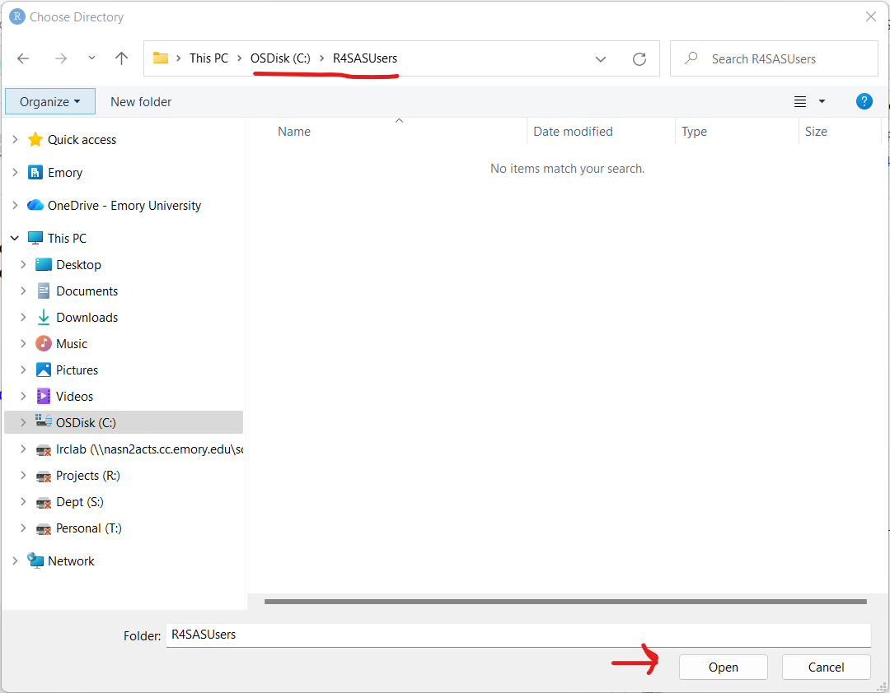
Now check that your “Project working directory” matches the folder you selected - on my computer this is C:\R4SASUsers. Then click “Create Project” to create a new RStudio project.
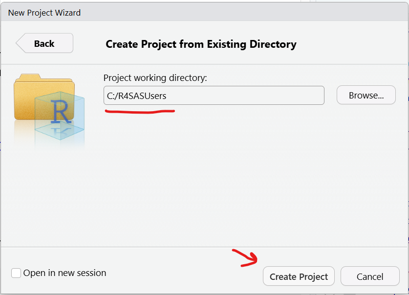
Your new RStudio project should look like this. Check the folder location at the top left of your window. Also check that this is the SAME folder shown in the “Files” tab at the bottom right window. In this “Files” window, you should see the files you copied over from what you downloaded from the “FilesForRProject” folder from the Google Drive R4SASUsers_Oct2026 for this workshop.
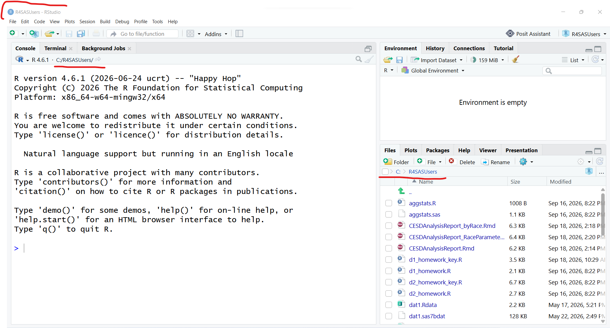
CONGRATULATIONS You should be good to go!